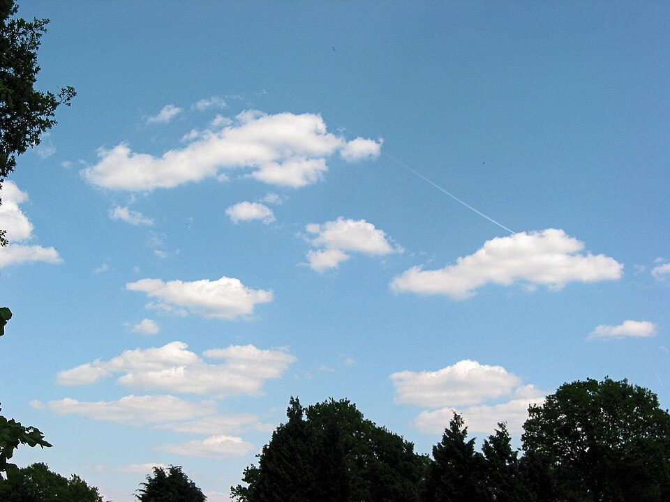
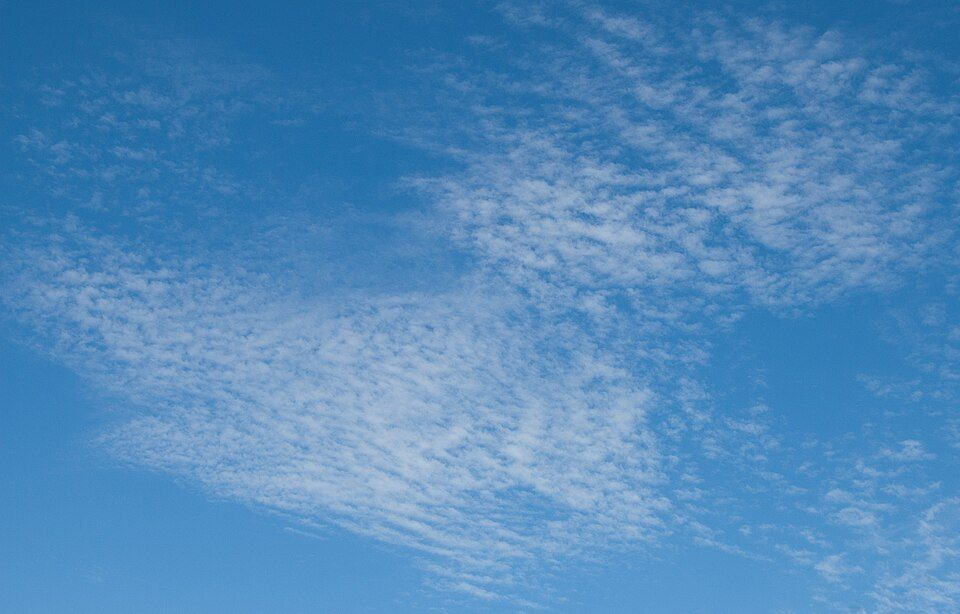
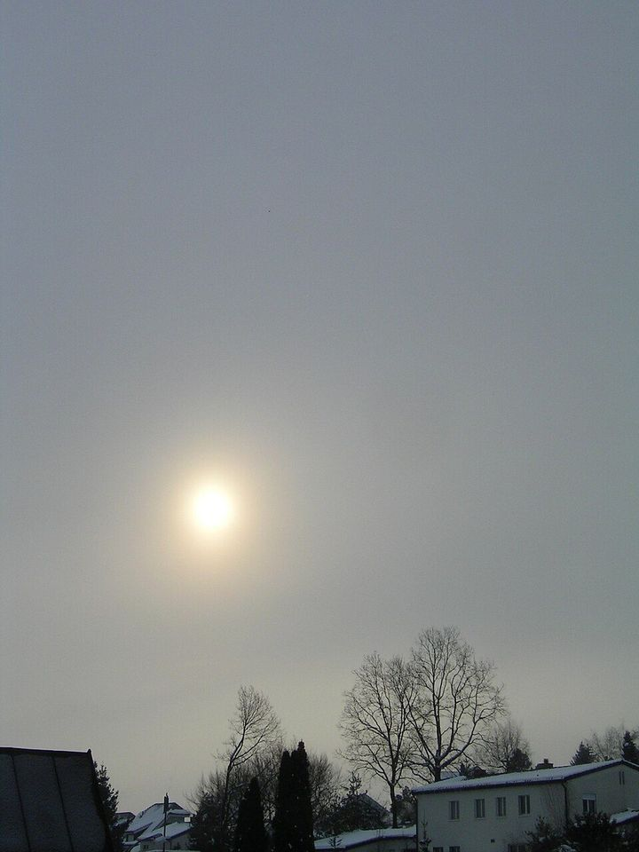
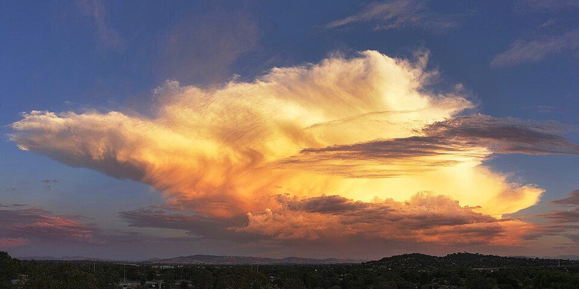
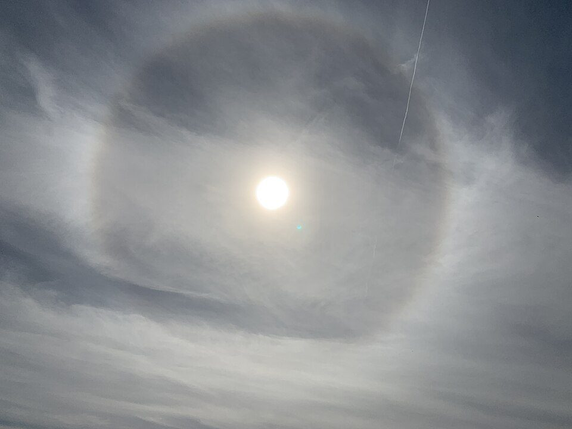
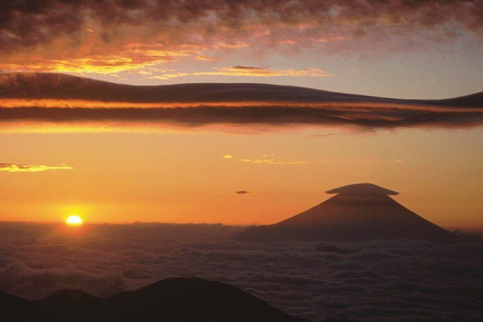

雲の種類で天気が分かるのはなぜ？ 雲のでき方、十種雲形、前線と雲の順番、天気のことわざ
要点まとめ
「うろこ雲が出たら雨が近い」「夕焼けの次の日は晴れ」のように、雲や空の様子から天気を予想する言い伝えは昔からあります。雲の種類で天気が分かるのは、雲の形や高さが「空気がどう動いているか」を表しているからです。この記事では、雲のでき方と分け方、前線が近づくときに雲が変わる理由、積乱雲の見分け方、ことわざの理屈を、気象庁の資料を中心にまとめました。
雲はどうやってできるか
空気が上がると、膨らんで冷え、雲になる
水蒸気が、小さなちりなどを芯にして水や氷の粒になる
気象庁の「気象観測の手引き」によると、空気が上がると、上空ほど気圧が低いので膨らんで冷えます[1]。冷えて水蒸気を含みきれなくなると、水蒸気は凝結核や氷晶核を芯にして水の粒や氷の粒になり、雲ができます[1]。雲の粒は空気より重いのですが、上向きの風（上昇気流）があるので浮かんでいられます[4]。粒が大きくなると浮かんでいられなくなり、雨になって落ちてきます[4]。
| 上がり方 | 上がる速さ | できる雲 |
|---|---|---|
| 広い範囲でゆっくり（温暖前線など） | 毎秒数cm〜数十cm | 層状の雲[1] |
| 対流（強い日差し、寒冷前線など） | 毎秒1〜10m程度。ひょうを降らせる雲では局部的に数十m | 積雲・積乱雲[1] |
| 山を越える流れ | ― | 山の風下のレンズ雲・波状雲など[1] |

十種雲形：高さと形で10種類
雲は、高さと形で10種類に分ける
気象庁の観測も、世界気象機関の分類も10種類
気象庁は、雲の形を10種類に分けて観測してきました[1]。世界気象機関（WMO）の国際雲図帳も、最も典型的な形から10の「類」を定めています[6]。10種類は、よく現れる高さで上層・中層・下層に分けられます[1]。積雲と積乱雲は下層に分類されますが、雲のてっぺんは上層まで達していることが多いです[1]。
| 雲（略号） | 見た目 | 天気との関係 |
|---|---|---|
| 巻雲（Ci） | 白く細いすじ状・羽毛状[1] | まっすぐ広がると崩れることが多い[7] |
| 巻積雲（Cc） | 小さな白い雲片がうろこ状に並ぶ[1] | 広がって厚くなると崩れることが多い[7] |
| 巻層雲（Cs） | 薄いベールのような層。日や月の「かさ」ができる[1] | 広がって厚くなると崩れることが多い[7] |
| 高積雲（Ac） | 小さなかたまりが群れになる[1] | 大きくなると崩れ、小さくなると晴れることが多い[7] |
| 高層雲（As） | 灰色の層。すりガラス越しのように太陽がぼんやり見える[1] | 厚くなると雨や雪を降らすことがある[7] |
| 乱層雲（Ns） | 暗い灰色の厚い層[1] | 雨や雪を降らせることが多い[1] |
| 層積雲（Sc） | 大きなかたまりが層やロール状になる[1] | 空一面をおおうと雨や雪が降ることがある[7] |
| 層雲（St） | 霧に似た灰色の一様な層[1] | 霧雨などが降ることがある[1] |
| 積雲（Cu） | 上がドーム形にもり上がり、底はほぼ水平[1] | 晴天のときにも見られる[7] |
| 積乱雲（Cb） | 山や塔のように高くそびえ、底は非常に暗い[1] | 雷・強いにわか雨・ひょう・突風を伴うことが多い[1] |
「いわし雲」は高積雲か巻積雲の別の呼び方で、「ひつじ雲」「うろこ雲」とも呼ばれます[8]。

雲の順番で天気が読める理由
温暖前線では、暖かい空気がゆっくりはい上がる
前線の面の傾きは約1/300。広い範囲に層状の雲ができる
温暖前線では、暖かい空気が冷たい空気の上にはい上がり、広い範囲でゆっくり上昇します[1]。前線の面の傾きは1/300程度で、上がる速さは毎秒数cmから数十cmなので、層状の雲ができます[1]。温暖前線が南や西から近づくと、雲はふつう、巻雲から巻層雲、高層雲、乱層雲と次第に低く厚くなり、一様な雨が降り始めます[1]。
前線の前方にいる人から見ると、雲は次の順番で変わっていきます。時間の目安は、米国の大学などの教材によるものです。
- はじめ
高い空に巻雲が現れ、巻層雲が広がる
- 1日ほど
雲の底が下がり、高層雲から乱層雲へ
巻層雲から乱層雲までは1日かそれ以上かかることもある[10]
- 6時間ほど
高層雲や低い層雲が出てくると、雨が近い
ふつう6時間ほど以内に雨の可能性[9]
- 前線の通過
乱層雲から、一様な雨が降り続く
寒冷前線では、積雲や積乱雲ができる
暖かい空気が急に持ち上げられ、にわか雨や雷雨になる
寒冷前線では、冷たい空気が暖かい空気の下にもぐりこんで進むので、暖かい空気が急に上昇させられ、主に積雲の形の雲ができます[11]。そのため、にわか雨や雷雨が起きます[11]。気象庁は、雨を降らせる低気圧が近づくときは、まず西の方から巻層雲などの高い雲が現れ、次に高層雲で曇り、乱層雲や積乱雲で雨になると説明しています[12]。

積乱雲と「大気の不安定」
上空が冷たく、地上が暖かいと、積乱雲が発達しやすい
積乱雲は高さ10kmを超え、激しい現象は30分〜1時間ほど
気象庁は、「大気の状態が不安定」とは、上空に冷たい空気があり、地上には温められた空気の層がある状態だと説明しています[2]。積乱雲は強い上昇気流で縦に発達した雲で、高さは10kmを超えることがあります[2]。1つの積乱雲がもたらす激しい現象は、30分〜1時間程度で、局地的な範囲に限られます[2]。

近づくサインは、黒い雲・雷の音・冷たい風
気づいたら、すぐに丈夫な建物などに避難する
気象庁は、積乱雲が近づくサインとして、真っ黒い雲が近づいてきた、雷の音が聞こえてきた、急に冷たい風が吹いてきた、の3つを挙げています[13]。サインに気づいたら速やかに安全な場所に避難し、単独の積乱雲なら30分〜1時間程度で弱まることが多いので、ナウキャストを見ながら過ぎ去るのを待つよう呼びかけています[14]。
天気のことわざは当たるか
「かさが出ると雨」には理屈がある
低気圧が近づくと、かさをつくる巻層雲が現れる
気象庁は、天気のことわざは全てが迷信ではなく、科学的に説明が付くものもあるとしています[3]。例えば「太陽や月がかさをかぶると雨」は、低気圧が近づくと上空に巻層雲が現れ、その雲が太陽や月の光にかさをつくるためです[3]。ただし、低気圧が近づいても100%雨が降るわけではありません[3]。

「夕焼けは晴れ」は、春と秋に当たりやすい
天気は西から変わるが、夏と冬は外れることがある
秋田地方気象台は、夕焼けは西の空に雲がなく、空気がきれいなときに起き、天気は西から変わるので次の日は晴れやすいと説明しています[19]。ただし、春と秋は当たりやすいものの、夏と冬は外れることがあるとしています[19]。ことわざは、地域の特性によって当てはまらない場合もあります[19]。
飛行機雲ができるかは、上空の温度と湿度による
「飛行機雲が消えずに広がると雨」ということわざもある
飛行機雲は、上空の温度が低く湿度が高い空気の中に、ジェット機の排気ガスの水蒸気が出て、水や氷の粒になったものです[4]。上空の温度や湿度によって、できる日とできない日があります[4]。秋田地方気象台は、「飛行機雲が消えないで広がると雨、消える場合は晴れ」をことわざの例に挙げています[19]。
| ことわざ | 当たった割合 | 期間中のふだんの割合 |
|---|---|---|
| 夕焼けは晴れ（翌日） | 83.5%[20] | 晴れた日 67.1%[20] |
| 飛行機雲が消えずに広がると雨（2日後まで） | 94.3%[20] | 雨の日 58.6%[20] |
| 東風が吹くと雨 | 37.3%[20] | 雨の日 35.9%[20] |
日本気象学会のジュニアセッションで、宮城県仙台第一高等学校の生徒が仙台で調べた結果です[20]。「東風が吹くと雨」は、ふだんの割合とほぼ変わらないので根拠がないと判定されています[20]。1地点・限られた期間の調査なので、ほかの地域にそのまま当てはまるとは限りません（筆者の見解）。

「山に笠雲がかかると雨」という言い伝えもあります。気象庁の手引きは、気流が山を越えるときに持ち上げられて雲ができ、山の風下にレンズ雲などができると説明しています[1]。ただし、笠雲と雨の関係を説明した気象台の資料は、今回は見つかりませんでした。
空を見ることと、気象情報の使い分け
気象台の雲の目視観測は、ほとんど自動化された
2024年2月の発表では、目視を続けるのは東京と大阪
気象台では、2019年1月まで全ての気象官署で職員が天気などを目で見て観測していました[21]。気象レーダーや気象衛星で大気の状態を総合的に把握できるようになったため、観測は段階的に自動化されました[21]。自動化した気象台では、雲の量や形、かさ・にじなどの観測を終えています[22]。
- 2019年2月1日
関東甲信地方の地方気象台で自動化
- 2020年2月3日
新潟・名古屋・高松・広島・鹿児島を除く地方気象台と測候所で自動化
- 2024年3月26日
札幌・仙台・名古屋・新潟・広島・高松・福岡・鹿児島・沖縄で自動化
東京・大阪は引き続き目視で観測[21]
空の変化は、予報やナウキャストと合わせて使う
ナウキャストは、雨・雷・竜巻を1時間先まで予測する
気象衛星ひまわりは、日本の周辺を2.5分ごとに観測しています[24]。気象庁のナウキャストは、降水・雷・竜巻の状況を1時間先まで予測し、5分または10分ごとに更新されます[25]。高解像度降水ナウキャストは、250m四方の細かさで30分先までの雨を予測します[26]。竜巻などの激しい突風のおそれがあるときは、「気象防災速報（竜巻注意）」が出ます（以前の「竜巻注意情報」）[27]。
今回確認できなかった点
- 前線から何km先・何時間前にどの雲が出るかを示す、日本の公的機関の数字
- ことわざが当たる割合についての、公的機関や大学の調査（高校生の発表だけ見つかった）
- 「笠雲は雨」「うろこ雲は雨」を説明した気象台の資料
- 東京・大阪の目視観測の、2024年3月より後の状況
- かさのでき方を、気象庁のよくある質問は光の「回折」と書いていて、WMOの説明と違う
関連する記事
出典（28件）
閲覧日はいずれも2026年11月10日
- 気象観測の手引き（第11章 雲、【参考】雲の発生）（気象庁）
- 急な大雨や雷・竜巻から身を守るために 積乱雲ってどんな雲？（気象庁）
- よくある質問集 天気予報・天気図について（気象庁）
- どうして雲はういているの？ ひこうき雲はどうしてできるの？（気象庁（はれるんランド））
- 雨粒の成長（窮理の部屋165）（大阪市立科学館）
- International Cloud Atlas: Genera（世界気象機関（WMO））
- 雲の形と天気の移り変わりにはどんな関係があるの？（気象庁（はれるんランド））
- いわし雲ってどんな雲なの？（気象庁（はれるんランド））
- Clouds Form Due to Weather Fronts（UCAR Center for Science Education）
- Meteo 3: Warm Fronts and Stationary Fronts（ペンシルベニア州立大学）
- 寒冷前線と温暖前線は、どうちがうの？（気象庁（はれるんランド））
- 天気の様子は、雲の動きや種類と関係あるの？（気象庁（はれるんランド））
- 急な大雨や雷・竜巻から身を守るために 積乱雲が近づくサインを見逃さない（気象庁）
- 急な大雨や雷・竜巻から身を守るために 積乱雲が近づいてきたら（気象庁）
- 急な大雨や雷・竜巻から身を守るために 「雷」による災害（気象庁）
- 雷から身を守るには（気象庁）
- はれるん通信（2013年7月16日）（福岡管区気象台）
- International Cloud Atlas: Halo phenomena（世界気象機関（WMO））
- ことわざ（天気俚諺）（秋田地方気象台）
- 夕焼けは晴れ・・・？ ～ことわざの統計的検証～（日本気象学会（ジュニアセッション予稿、宮城県仙台第一高等学校））
- 気象官署の目視観測通報の自動化について（2024年2月9日）（気象庁）
- 広島、高松地方気象台における目視観測通報を自動化します（2024年2月9日）（大阪管区気象台）
- 地方気象台及び測候所における目視観測通報の自動化について（2019年12月26日）（気象庁）
- 気象衛星の役割（気象庁）
- 急な大雨や雷・竜巻から身を守るために 気象情報をこまめに確認する（気象庁）
- 高解像度降水ナウキャスト（気象庁）
- 気象防災速報（竜巻注意／竜巻目撃）の発表回数と突風事例の数え方（気象庁）
- 日本全国で部分日食（2020年6月）（国立天文台）
写真・画像の出典（7件）
- 対流でできる積雲
写真: Rasbak／Wikimedia Commons（CC BY-SA 3.0） - すじ状の巻雲（ノルウェー）
写真: Ximonic (Simo Räsänen)／Wikimedia Commons（CC BY-SA 3.0） - 小さな雲片がうろこ状に並ぶ巻積雲
写真: King of Hearts／Wikimedia Commons（CC BY-SA 3.0） - 高層雲を通して、ぼんやり見える太陽
写真: LivingShadow／Wikimedia Commons（CC BY-SA 3.0） - 上が平たく広がった積乱雲（オーストラリア）
写真: Thennicke／Wikimedia Commons（CC BY-SA 4.0） - 太陽のまわりにできた「かさ」
写真: pedrik／Wikimedia Commons（CC BY 2.0） - 笠雲がかかった富士山
写真: Alpsdake／Wikimedia Commons（CC0）